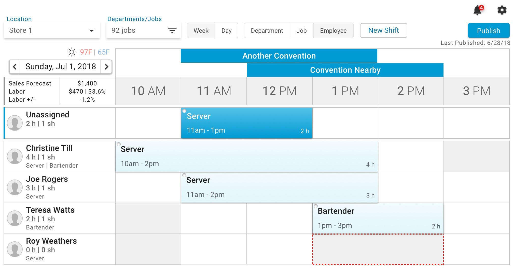
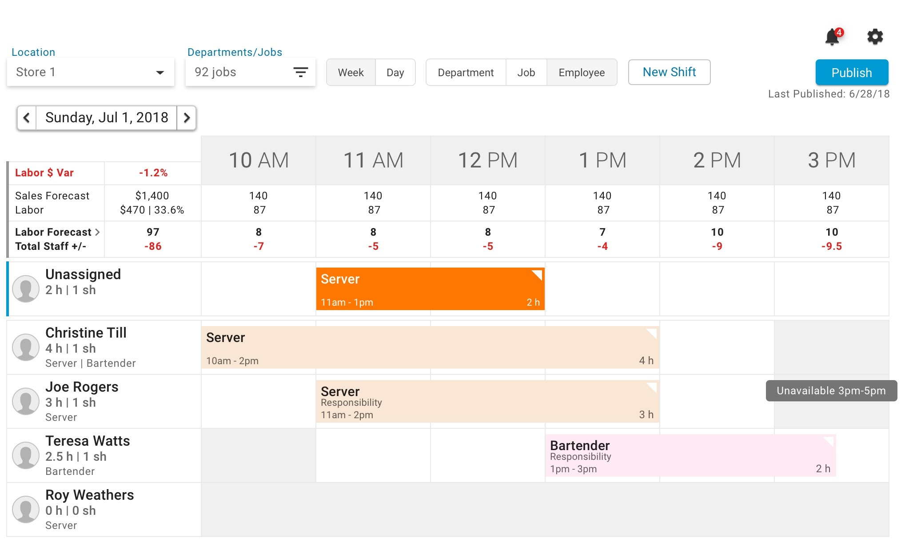

One of my first projects for R365 was to redesign the shift scheduling experience. Our scheduling web application was used by restaurant managers and assistant managers - anyone who might prepare a restaurant's weekly schedule and send it out to employees. While functional, the original application wasn't the most responsive; making changes to a given schedule was a painful experience. R365 wanted to update the look & feel of its existing scheduling software, give it more robust features, and bring it up to speed with more modern tools.
Objective:
Enable restaurant managers to schedule shifts at the appropriate times, easily identify gaps in their scheduling, and adjust quickly when necessary.
Process
Most of the discovery process had already been completed by the time I was assigned to this project, but I participated in a few client interviews. These interviews helped me understand the existing gaps between our application's capabilities and restaurants' needs.
From there, I began sketching and wireframing possibilities. Starting from the first set of wireframes, I conducted usability tests to learn more about the information restaurant managers needed to know upfront. I worked closely with the product owner and engineering team throughout the project, from grooming user stories to prototyping and testing the usability of new features.
Discovery
Original R365 scheduling experience
The existing scheduling app was functional but very rigid. The application provided a lot of information upfront, but all of this information was given equal weight, making it harder to comprehend or differentiate. Overtime hours were indicated per employee, but this was lost amongst a list of dozens of employees.
The existing scheduling application
Users found it difficult to quickly make or create shifts, since selecting a particular shift took you to a different page. This process meant they lost the visual context of other shifts already created.
User interview insights
Our interviews clarified current users' understanding and usage of the existing scheduling application. One of the most painful pieces of feedback we received about the existing app was:
Some managers chose to use an Excel sheet with multiple tabs and handle their schedule manually, rather than create their schedules in the R365 system.
Pain points:
Inability to quickly adjust shift times and respond to day-to-day changes such as employee turnover
Confusion with job codes leading to mistakenly removing irrelevant shifts
Information overload
Special events were displayed all day, not hour-specific
Stated user needs:
"Blackout days" to effectively plan for holidays
Ample coverage for customer demand
Identifying available employees during last-minute cancellations
Providing staff access to up-to-date schedules from anywhere
Design
I began ideating and sketching to find a clean, elegant solution. I concentrated on providing a legible, easy-to-parse schedule that users would be able to quickly scan to find the information they wanted:
Restaurant location
Week of schedule
Each employee’s job
The number of hours they worked
The number of shifts they were scheduled for that week
From wireframes to final UI
Where it all started
My early wireframes struggled to establish a sense of hierarchy. The information available on-screen was legible, but everything was presented too equally.
I indicated an employee's lack of availability throughout the week by shading the cell in gray. Testing showed that this pattern was easily recognizable by restaurant managers and administrators, so I kept it for all of my iterations.
I began to incorporate Material Design elements as we proceeded with usability testingA more polished version included a dropshadow under shifts, to indicate they were clickable
I aimed to layer important information onto the page so that someone could locate it quickly, even if it wasn't immediately obvious. I used a side sheet to house options that weren't so vital to display on the main scheduling page.
We received feedback that it was important to see responsibilities associated with jobs at a glance, so I ended up including those on each shift card. On the other hand, information like an employee’s star rating or a shift's catering site were visible only when clicking on a specific shift.
Over time, I updated the UI to account for metrics like forecasted labor hours and variances.
The final iteration, which was developed in React
Segmenting the scheduling experience
"A bartender might not matter to a certain manager. They might only care about employees in the back of house."
We'd heard from our interviews that confusion arose from lack of segmentation when many job codes were in play. A bar manager might publish a schedule while a back-of-house manager was still working on their schedule for the week.
To mitigate this confusion, we introduced Departments - an attribute of Job Codes. Administrators could therefore organize their jobs by department, such as Front of House and Back of House.
Each department could set its own daily sales and labor metrics. Each manager could filter their schedule to restrict their view to only their department's employees. This meant managers could view and publish the shift for their specific department without worrying about potentially destructive actions like accidentally updating another department’s.
Color palette for shifts
Administrators could assign one of 10 preselected colors to each of their organization's job codes. These colors would be reflected on shifts created on the scheduler. Our existing color palette was a combination of bright bold colors and muted darks. This combination certainly didn't help with the information overload experienced by users.
The existing color palette used for shifts
At the beginning of the project, I had been told that we were keeping the original scheduler's color palette. After several rounds of wireframes, I was asked to create a new color palette for shifts. As someone who didn't have much experience with UI, this endeavor excited and terrified me.
On the scheduler itself, there was no way to visually differentiate an assigned shift from an unassigned shift or a shift currently clicked. I created a set of 11 colors - with variants for assigned shifts (pastel-like and desaturated), unassigned shifts (medium saturation), and currently clicked shifts (the darkest of each set).
Updated color palette
Designing interactions
One of my goals for the new scheduling experience was a more manageable shift creation/update process. With the previous scheduling application, it was not possible for managers to quickly change a shift's hours or the employee it was assigned to. My new design allowed managers to create a shift by clicking on the grid.
Drag-and-drop functionality would allow managers to update shift times on the fly or quickly change which employee a shift was assigned to. I also advocated for a quick filter view, so managers could quickly find employees with a given job code and their current schedules.
Validation
The Scheduling app was first demoed to potential customers at MURTEC, one of the biggest conferences for the restaurant technology industry. It received glowing reviews from those who saw the demo. One restaurant group's CEO immediately let us know that he was excited to get it rolled out to all of his stores.
"Scheduling for managers and team members is clear and simple."
Reflection and next steps
Watching the web development team's progress with Scheduling was extremely satisfying, especially being able to click on and interact with the things I'd designed.
This experience also taught me not to get too attached to a feature. Throughout the design process, I worked closely with the product owner to identify what features were necessary for our MVP. Ultimately, some of the things I included in the first set of wireframes were not developed, like splitting shifts to assign to multiple employees.
I have to admit that I was not confident with my UI skills when I started this project, but I'm happy with how it turned out after all those rounds of iteration. I had been afraid to stray too far from the original scheduling app's design, but the product owner and our VP of Product really challenged me to fine-tune the UI. I'm deeply appreciative of their support, especially seeing how it ended up after all of my iterations.
Details
ContextFirst project for Restaurant365, a company developing accounting/operations software for restaurants


{kind=link}
{kind=link}